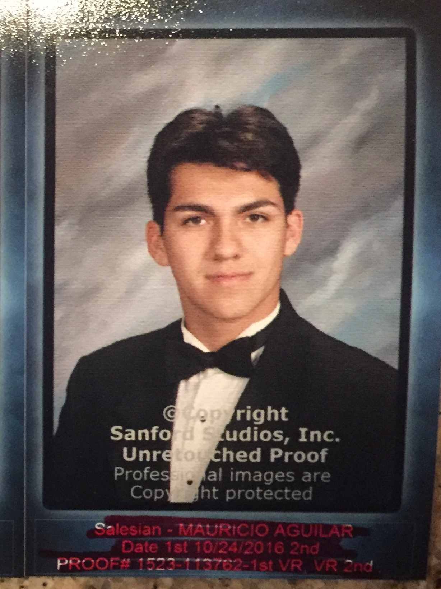
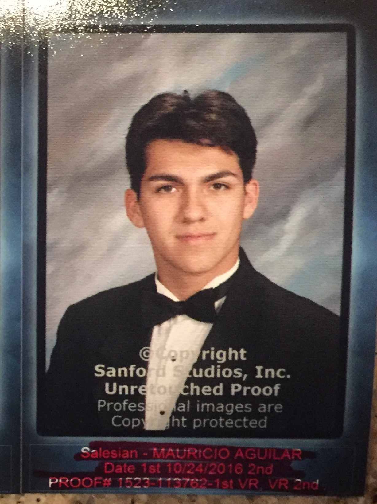

About Me
Self Portrait
 

Hobbies
- One hobby I enjoy is playing catch with my brother.
- A second hobby of mine is playing NBA 2K17, a Xbox One video game.
- A third hobby is watching baseball games and creating a line score for each game.
Accomplishments
- I achieved top ten honors my first two years of high school, and injury junior year limited a third time.
- Admittance into the USC Leventhal School of Accounting's Summer Leadership Program was a great feat. I was one of only 40 students to be admitted into this.
- My dedication in Junior Varsity Baseball from 2013-2015 allowed me to earn an award- a certificate- for outstanding performance and exceptional commitment.
Future Plans
- I plan to attend USC, and major in economics.
- An internship in the Dodger's organization is a goal of mine.
- My dream job is to become the general manager of the Dodger's organization after several years of hard work.
Technical Skills